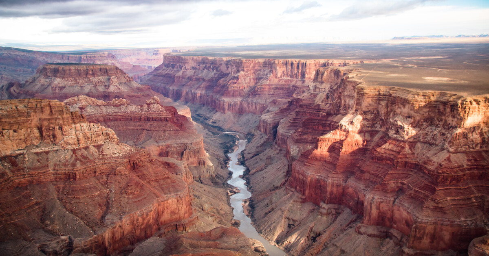

Grand Canyon:
Le Grand Canyon, situé en Arizona, est une formation naturelle caractérisée par des couches de roche rouge visibles sur ses versants,
révélant des millions d'années d'histoire géologique dans une coupe transversale. Le canyon, extrêmement imposant, s'étend sur environ 16 km de largeur et 446 km de longueur,
avec une profondeur moyenne de 1 600 m. Couvrant une grande partie du territoire,
le parc national est traversé par les eaux vives des rapides du fleuve Colorado et offre des vues panoramiques.
Kreuzspitze (Ötztal):
La Kreuzspitze (littéralement « pointe de la Croix ») est un sommet des Alpes, à 3 455 m d'altitude,
dans le massif de l'Ötztal, en Autriche, dans le Land du Tyrol.